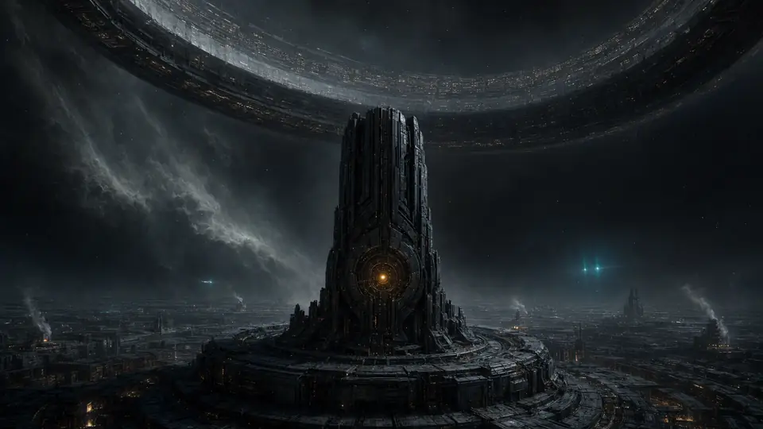
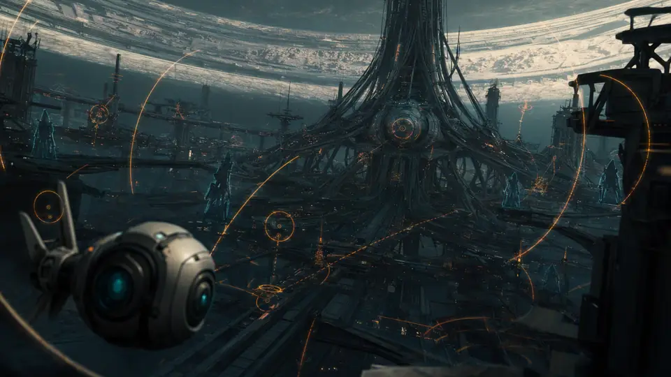
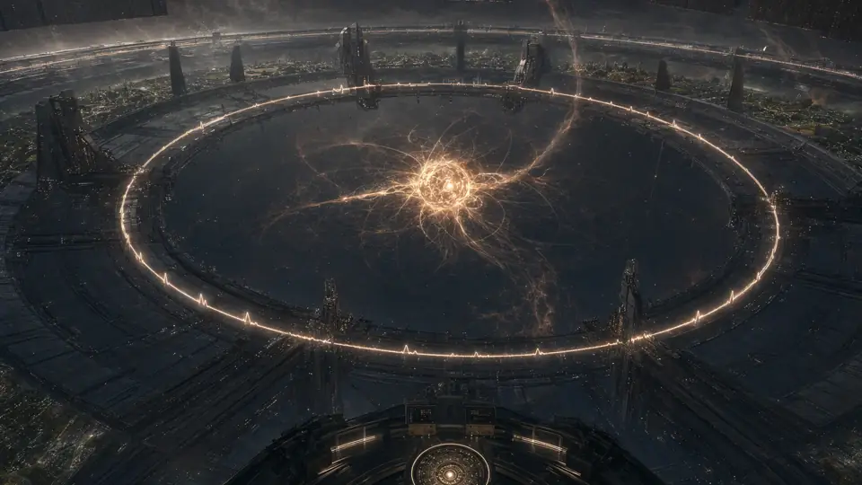
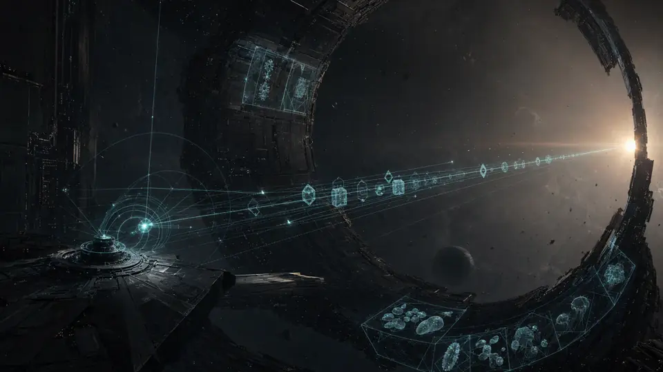

Faction
Unit Name
Role
Description...
SPECIAL ABILITY:
Ability description
HIT POINTS: 1200
RESOURCE COST: 450 S
Command & Conquer meets Kerbal ballistics on a Halo ring megastructure.
War in three registers: ground mech maneuver, over-the-horizon rocket artillery, and the overhead enemy hanging in your sky.
The central Solar Filament is failing. The Shadow-Square Network is drifting out of sync. The ring's surviving Spinal Network can authorize only one final habitat-scale operation.
A mobile society descended from maintenance guilds, sensor operators, and machine-integrated communities. They believe the habitat is beyond repair and seek to launch a new starship into the deep cosmos.
A coalition of permanent arc-cities, civil governments, industrial families, and military commands. They fight to preserve the ring's existing population and stabilize the habitat's rotational velocity.




In a rotating cylinder world, projectiles experience true Coriolis accelerations. Firing spinward vs. antispinward yields fundamentally asymmetric trajectory behavior.
All artillery fire is simulated in real-time within the rotating frame. Antispinward shots subtract tangential spin speed to fly much further.
Press V at any time to drop into third-person over-the-shoulder direct combat control with WASD + torso aiming.
Capture neutral Spinal Nodes to earn Command Points (C). Control paired Nodes to form Spinal Alignment and earn Dominance for victory.
Mined from ruin fields by Extractor structures and hauler drones. Primary currency for building structures and massing unit production. Deposits are finite!
Generated by Solar Arrays (day-dependent) & Fusion Cores. Actively consumed by radar masts, point defense lasers, and rocket guidance systems.
Cap on concurrent active combat mechs. Earned exclusively by contesting and capturing neutral Spinal Node towers across the ring.
Explore the tactical roster of mechs, drones, and artillery batteries fielded in the Last Rotation.
Description...
Ability description
Master the official 10-step tactical scenario from early solar construction to antispinward siege strikes.
Click to select your starting construction Engineer. Engineers are the backbone of fabrication and resource infrastructure.
Command reference chart and local game launcher instructions.
To launch the game development server or execute the First Contact scenario directly: